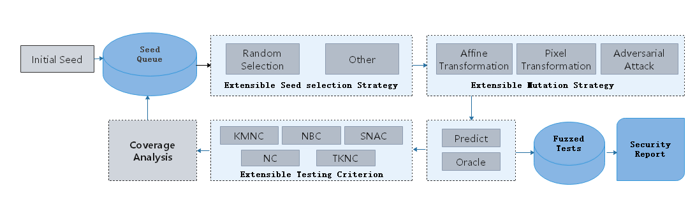

AI模型安全测试
Linux Ascend GPU CPU 数据准备 模型开发 模型训练 模型调优 企业 高级

背景
不同于传统程序的Fuzz安全测试，MindArmour针对深度神经网络，提供AI模型安全测试模块fuzz_testing。根据神经网络的特点，引入神经元覆盖率[1]的概念，作为Fuzz的测试指导，引导Fuzz朝神经元覆盖率增加的方向生成样本，让输入能够激活更多的神经元，神经元值的分布范围更广，以充分测试DNN，探索不同类型的模型输出结果、模型错误行为。
Fuzz Testing设计图
AI模型安全测试设计图如下。

在用户接口层，需要用户提供原始数据集DataSet、被测试模型Model和配置Fuzzer参数Fuzzer configuration。Fuzzer模块对模型和数据进行Fuzz测试后，返回安全评估报告Security Report。
Fuzz Testing架构主要包括三个模块：
Natural Threat/Adversarial Example Generator（数据变异模块）：
随机选择变异方法对种子数据变异生成多个变种。支持多种样本的变异策略， 包括：
图像仿射变换方法如：平移、旋转、缩放、错切。
基于图像像素值变化的方法如：改变对比度、亮度、模糊、加噪。
基于对抗攻击的白盒、黑盒对抗样本生成方法，如FGSM、PGD、MDIIM。
Fuzzer moduler（变异指导模块）:
对变异生成的数据进行fuzz测试，观察神经元覆盖率的变化情况，如果生成的数据使得神经元覆盖率增加，则加入变异的种子队列，用于下一轮的数据变异。目前支持的神经元覆盖率指标包括KMNC、NBC、SNAC[2]。
Evaluation（评估模块）：
评估Fuzz Testing的效果，生成数据的质量，变异方法的强度。支持3个类型5种指标，包括通用评价指标：accuracy，神经元覆盖率指标：kmnc， nbc，snac，对抗攻击评价指标：attack_success_rate。
Fuzz Testing流程

具体的Fuzz Testing流程如下：
根据策略从种子队列中选择一个种子A。
随机选择变异策略，对种子A进行变异，生成多个变种数据A1，A2…
用目标模型对变种A1，A2…进行预测，如果变种的语意与种子保持一致，则进入Fuzzed Tests。
若目标模型对于变种的预测结果是正确的，用神经元覆盖率指标进行分析。
如果变种使得覆盖率增加，那么将该变种放入种子队列，用于下一轮变异。
通过多轮循环，我们获得一系列变异数据Fuzzed Tests，并进一步分析，从多个角度给出安全报告。可以用于深入分析神经网络模型的缺陷，从而针对这些缺陷，进行模型增强等，改善提升模型的通用性、鲁棒性。
代码实现
fuzzing.py：Fuzzer总体流程。
model_coverage_metrics.py：神经元覆盖率指标，包括KMNC，NBC，SNAC。
image_transform.py：图像变异方法，包括基于像素值的变化方法和仿射变化方法。
adversarial attacks：对抗样本攻击方法，包含多种黑盒、白盒攻击方法。
参考文献
[1] Pei K, Cao Y, Yang J, et al. Deepxplore: Automated whitebox testing of deep learning systems[C]//Proceedings of the 26th Symposium on Operating Systems Principles. ACM, 2017: 1-18.
[2]Ma L, Juefei-Xu F, Zhang F, et al. Deepgauge: Multi-granularity testing criteria for deep learning systems[C]//Proceedings of the 33rd ACM/IEEE International Conference on Automated Software Engineering. ACM, 2018: 120-131.